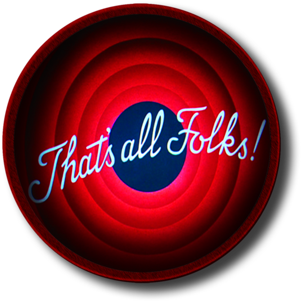

LINKS!
☰ Abrir NavegaçãoOlá mundo!
Essa é a minha primeira tentativa na criação de um site pessoal!
Sobre mim
Meu nome completo é Alexsandro Meurer Schneider. Eu nasci na cidade de Ivoti, Rio Grande do Sul, no dia 27/09/1994.
Concluí o ensino médio no ano de 2011.
Por muito tempo estive ocioso, porém o desejo de aprender sempre me acompanhou.
Em 2019 decidi fazer o ENEM e, em seguida, me inscrevi no SISU, acabei ganhando a vaga no curso de ciência da computação pela UFFS Campus Chapecó.
Do que eu gosto:
Gosto de todas as novidades tecnologicas: geração de energia renovável, veículos elétricos, lançamentos espaciais, interface cérebro-computador, inteligecia artifical, entre outras.
Ganhei meu primeiro computador aos 10 anos de idade e até hoje me mantenho fiel a PC Master Race.
Um dos primeiros jogos que tive contato no PC foi o Counter-Strike 1.6, joguei muito nas Lan Houses
Atualmente continuo jogando o bom e velho CS na sua versão mais recente, o Global-Offensive.
Também gosto de jogos como: Kerbal Space Program, Minecraft, The Witcher 3, Fallout 4, PUBG entre outros.
Gosto vários estilos de música: Rock'n'Roll, Metal, Pop, EDM, Rap.
Minhas bandas favoritas são: System of a Down, Metallica, Red Hot Chilli Peppers, Slipknot, AC/DC, etc...
